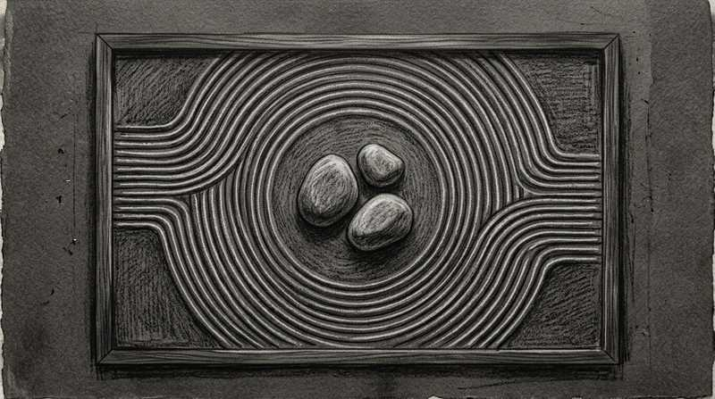

Un visiteur n'a besoin ni d'un texte de présentation, ni d'un menu déroulant, ni même d'une image nette pour se faire un premier avis sur un site. Il lui suffit d'un cinquantième de seconde, moins de temps qu'un clignement d'œil. Et ce premier avis, presque toujours, se joue sur une seule variable : la quantité d'éléments visuels à traiter d'un coup.
La confiance qu'inspire une interface relève du dernier des trois piliers d'une présence en ligne, celui où se décide le passage à l'acte. Sa traduction la plus mesurable se lit dans les tunnels de don et leur friction.
1. La décision se prend en 50 millisecondes
Une étude de référence menée par Gitte Lindgaard et son équipe a montré que des participants exposés à des pages d'accueil pendant seulement 50 millisecondes — puis pendant 500 millisecondes lors d'un second essai — donnaient des jugements d'attrait visuel quasiment identiques dans les deux cas. Autrement dit, l'essentiel du jugement esthétique est déjà scellé avant même que le regard ait eu le temps de « lire » la page.
le temps nécessaire pour qu'un jugement esthétique se forme sur un site — et reste stable même avec plus de temps d'exposition.
Source : Lindgaard, Fernandes, Dudek & Brown, Behaviour & Information Technology (2006)
Ce jugement instantané n'est pas anecdotique : il détermine si le visiteur reste ou referme l'onglet, avant même d'avoir lu le premier mot du contenu. Un design encombré n'a tout simplement pas le temps de se justifier.
2. Complexité visuelle : moins belle, même familière
Une étude menée par des chercheurs de Google (Reinecke & Gajos) a mesuré deux facteurs dans le jugement d'un site : sa complexité visuelle (le nombre d'éléments à traiter) et sa prototypicalité (à quel point il ressemble à ce qu'on attend d'un site de sa catégorie). Résultat : une forte complexité visuelle est perçue comme moins belle, même quand le design reste familier. À l'inverse, un design à la fois simple et familier obtient systématiquement les meilleures notes d'attrait.
Source : Google Research, « Users Love Simple and Familiar Designs »
3. L'effet esthétique-utilisabilité
Le Nielsen Norman Group appelle ce phénomène l'effet esthétique-utilisabilité : les utilisateurs perçoivent les designs qui leur plaisent visuellement comme plus faciles à utiliser, indépendamment de leur utilisabilité réelle. Un design sobre bénéficie ainsi d'une forme de crédit de confiance avant même d'avoir été testé. C'est aussi la logique derrière la 8ᵉ heuristique d'utilisabilité de Nielsen : chaque élément superflu dilue la visibilité des éléments qui comptent vraiment.
Ce même principe se retrouve, de façon moins académique mais très concrète, dans un cas devenu classique du secteur : en supprimant un unique champ de formulaire jugé source de confusion, Expedia a mesuré un gain de 12 millions de dollars de revenu annuel. La friction visuelle et cognitive coûte littéralement de l'argent, un champ à la fois.
4. Ce que ça change dans la pratique
C'est le principe qui a guidé la refonte du parcours de don de la Fondation Princesse Charlène de Monaco : un formulaire dépouillé à l'essentiel, sans élément décoratif superflu autour du montant à saisir, pour que la sobriété visuelle elle-même signale le sérieux de la démarche.

Petit glossaire
- Complexité visuelle
- Le nombre d'éléments distincts (couleurs, formes, textes, images) qu'un visiteur doit traiter en un coup d'œil.
- Prototypicalité
- À quel point un design ressemble à ce à quoi on s'attend pour sa catégorie — un site e-commerce « qui ressemble à un site e-commerce », par exemple.
- Effet esthétique-utilisabilité
- Biais cognitif par lequel un design jugé beau est perçu comme plus facile à utiliser, indépendamment de son utilisabilité réelle.
- Charge cognitive
- L'effort mental nécessaire pour comprendre et utiliser une interface — chaque élément superflu l'augmente.
Questions fréquentes
Sobriété visuelle veut-il dire design pauvre ou low-cost ?
Comment savoir si un design est « trop » chargé ?
La sobriété s'applique-t-elle aussi aux formulaires et pas seulement à l'esthétique ?
Une interface à alléger ?
Audit UX, simplification de parcours, refonte visuelle — je peux vous aider à retirer ce qui n'a pas besoin d'être là.
Démarrer un projetSources
- Lindgaard, Fernandes, Dudek & Brown — « Attention web designers: you have 50 milliseconds... », Behaviour & Information Technology (2006).
- Google Research — « Users Love Simple and Familiar Designs ».
- Nielsen Norman Group — « Aesthetic and Minimalist Design ».
- UX Movement — « The $12 Million Optional Form Field » (cas Expedia).